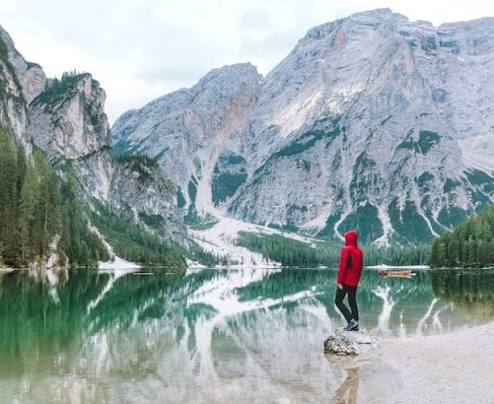

Packages
Waters of The Philippines
Crystal-clear waters, hidden lagoons, and tropical islands make the Philippines feel like a real-life postcard. Whether you're relaxing on the shore or exploring by boat, every stop offers something new to discover.

Mountains of Scotland
Misty mountains, rolling green hills, and ancient castles give Scotland a landscape that feels straight out of a storybook. It’s the perfect destination for anyone who loves dramatic views, quiet trails, and a little bit of mystery.

Villages of Italy
Wander through cobblestone streets, colorful homes, and charming cafés tucked into the villages of Italy. Every corner offers a chance to slow down, enjoy the scenery, and experience a little piece of Italian life.